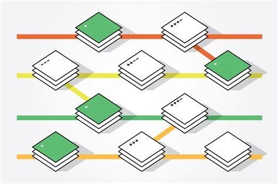

An Introduction to Git

Version Control
System that allows for tracking and management of changes
- Creation or deletion of files
- Any changes made to code
- Annotation and tracing of changes by authors
Branching
Allows for experimentation without fear of hurting existing functionality
Independent Concurrent Work
Contributors work independent of others' concurrent changes; merge branches to combine work
Project Stability
Aids in well-defined and organized development process

Some Version Control Systems
Concurrent Versions System (CVS)
- Client-server model - server posses master copy
- Users check out a complete copy from the server
- Server only accepts changes from most recent changes to file
- Last release in 2008
Subversion (SVN)
- Client-server model
- Matches/exceeds CVS features: atomic transactions, file locking
Mercurial
- Distributed model - repository mirrored locally on every contributor's system
- Extensions may be written in Python
- Fast transactions due to lack of central server dependence
Git
- Distributed model
- Fast and cheap transactions
- Atomic transactions, file locking, tagging
- Untracked - file is not included in git
- Unstaged - file is under source control, but changes have not yet been staged
- Staged - file's changes have been saved in the staging area
- Committed - file's changes have been commited to repo
Status of files

-
Installation
Step-by-step walkthrough of Windows installation -
Initialization
Creating a git repository in a project -
CLI Functions
Staging, commiting, pulling, pushing, branching, etc. -
Remotes
Using remote services such as GitHub or GitLab
Installing Git
https://git-scm.com/downloads
Verifying Installation
> git --version
E:\path\to\project\root> git --version
git version 2.15.1.windows.2
Creating a Git Repository
> git init
E:\path\to\project\root> git init
Initialized empty Git repository in e:/path/to/project/root/.git/
Git Status
> git status
E:\path\to\project\root> git status On branch master Changes to be committed: (use "git reset HEAD <file>..." to unstage) modified: path/to/file.ext new file: path/to/file2.ext Changes not staged for commit: (use "git add <file>..." to update what will be committed) (use "git checkout -- <file>..." to discard changes in working directory) modified: path/to/file3.ext
Adding Files
- add untracked files to git
- stage unstaged changes
The following commands are used to...
> git add <file/dir>
> git add .
> git add .ex:
> git add index.html
> git add *.js
> git add directory
E:\path\to\project\root> git add script.js
warning: LF will be replaced by CRLF in script.js
The file will have its original line endings in your working directory.
...
Committing Files
Commit changes to the git repository
> git commit // message editing ui
> git commit -m "<msg>" //
oneliner
> git commit -message="<msg>"
E:\path\to\project\root> git commit -m "Initial commit."
[master d78736a] Initial commit.
3 files changed, 127 insertions(+), 17 deletions(-)
...
Summary messages should be clear and concise; verbalize changes in a couple of words
Follow, if necessary, with explanation of changes: what and why
Not all commits need a body
For more detailed information: https://chris.beams.io/posts/git-commit/Viewing Commits
> git log
> git log --oneliner
> git log <branch_name>
> git log --author=<name>
E:\path\to\project\root> git log commit d78736a93aea9ccf24b47b367bc0ed87f2d1ca48 (HEAD -> master) Author: Eric Zhao <21zhaoe@gmail.com> Date: Thu Feb 27 00:00:05 20XX -0500 One-line summary of changes A more detailed summarization of what changes were made and why they were made. Blah blah blah... blah blah blah... commit 1b80ddb9ded8c3ec64a046c844573103f3393426 Author: Eric Zhao <21zhaoe@gmail.com> Date: Thu Feb 27 00:00:00 20XX -0500 Initial commit
E:\path\to\project\root> git log --oneline d78736a (HEAD -> master) One-line summary of changes. 1b80ddb Initial commit.
Reset
For completely dropping commits after the desired one:
> git reset --hard <commit>
E:\path\to\project\root> git reset --hard 1b80ddb
HEAD is now at 1b80ddb Initial commit
Revert
Creates new commit that patches out changes of given commits
Revert changes of given commits:
> git revert <commit_1> <commit_2> ...
Revert changes of range of commits:
> git revert <range_start>..<range_end>
E:\path\to\project\root> git revert HEAD~1..HEAD // remove changes of last [master 8815c24] Revert "Make changes" 1 file changed, 1 insertion(+), 2 deletions(-)
Checkout
Switches between branches or commits
> git checkout <commit_id> // working directory to match commit
> git checkout <branch_name> // checkout HEAD of branch
Branching
Create a new branch and switch to it:
> git checkout -b <branch_name>
Switch to a branch:
> git checkout <branch_name>
Delete a branch:
> git branch -d <branch_name>
E:\path\to\project\root> git checkout -b new_feature Switched to a new branch 'new_feature' E:\path\to\project\root> git add . E:\path\to\project\root> git commit -m "This is a commit on the new_feature branch" [new_feature db1acf4] This is a commit on the new_feature branch 1 file changed, 16 insertion(+) E:\path\to\project\root> git log commit db1acf40273fc79d1258e8ef3384cbd05cd0cbbe (HEAD -> new_feature) Author: Eric Zhao <21zhaoe@gmail.com> Date: Thu Feb 27 00:00:15 20XX -0500 This is a commit on the new_feature branch commit d7251dd0e242178bb4e33c63fae37fc0668d63d0 (master) Author: Eric Zhao <21zhaoe@gmail.com> Date: Thu Feb 27 00:00:10 20XX -0500 This is a commit on the master branch ... E:\path\to\project\root> git checkout master
Merging Branches
Merge branch to current branch
> git merge <branch_name>
E:\path\to\project\root> git merge new_branch Updating 6aea1e5..26a10d0 Fast-forward ajwlkdjalkwjldjawkldj.txt | 1 + 1 file changed, 1 insertion(+) create mode 100644 ajwlkdjalkwjldjawkldj.txt E:\path\to\project\root> git checkout master Switched to branch 'master' E:\path\to\project\root> git branch -d new_branch
Remote Repositories
Repository mirrored on a remote server to enable collaboration
- GitHub - https://github.com
- GitLab - https://gitlab.com
- BitBucket - https://bitbucket.org
- Sourceforge - https://sourceforge.net
Some remote services:

Defining Remotes
Adding Remotes
> git remote add <name> <https_link>
Removing Remotes
> git remote remove <name>
E:\path\to\project\root> git remote add origin https://github.com/username/repo-name.git E:\path\to\project\root> git remote -v origin https://github.com/username/repo-name.git (fetch) origin https://github.com/username/repo-name.git (push) E:\path\to\project\root> git remote remove origin E:\path\to\project\root> git remote -v
Pushing and Pulling
Pushing commits to a remote
> git push <remote> <branch>
Pulling commits from a remote
> git pull <remote>
E:\path\to\project\root> git push origin master Enumerating objects: 3, done. Counting objects: 100% (3/3), done. Delta compression using up to 8 threads. Compressing objects: 100% (2/2), done. Writing objects: 100% (2/2), 312 bytes | 34.00 KiB/s, done. Total 2 (delta 0), reused 0 (delta 0) To https://github.com/username/repo-name.git c762e24..6aea1e5 master -> master // files on remote become more recent due to some edits E:\path\to\project\root> git pull origin master From https://github.com/username/git-repo * branch master -> FETCH_HEAD Merge made by the 'recursive' strategy. jdaklwjdkljwakdj.txt | 1 + 1 file changed, 1 insertion(+) create mode 100644 jdaklwjdkljwakdj.txt
Pull Requests
Discuss and review changes before merging branches
Request contributors to pull your changes into their repository
More Things
Staging Files
These are the same:
> git add <file/dir>
> git stage <file/dir>
Removing Files
> git rm <file> // deletes from
git and filesystem!
Recursive removal for directories: -r
Deletes from git, but keeps file --cached
For staged files or directories, add -f or --force, or first
unstage
E:\path\to\project\root> dir Directory of E:\path\to\root 02/28/2019 20:46 <DIR> . 02/28/2019 20:46 <DIR> .. 02/28/2019 18:37 7 .gitignore 02/28/2019 20:54 19,063 index.html 02/28/2019 20:46 <DIR> test 3 File(s) 22,101 bytes 5 Dir(s) 635,638,149,120 bytes free E:\path\to\project\root> git add test // test, its files, and subdirectories are now staged E:\path\to\project\root> git rm -r -f --cached test // test, its files, and subdirectories are now untracked rm 'test/test.txt'
Unstaging Changes
> git reset HEAD <filename>
> git reset <filename>
E:\path\to\project\root> git add file.txt E:\path\to\project\root> git reset file.txt Unstaged changes after reset: M index.html ...
Tagging
> git tag <tag> <commit_id>
E:\path\to\project\root> git tag 1.0.0 d7251dd0e2 E:\path\to\project\root> git log commit d7251dd0e242178bb4e33c63fae37fc0668d63d0 (HEAD -> master, tag: 1.0.0) Author: Eric Zhao <21zhaoe@gmail.com> Date: Thu Feb 27 00:00:15 20XX -0500 This is a commit on the master branch ...